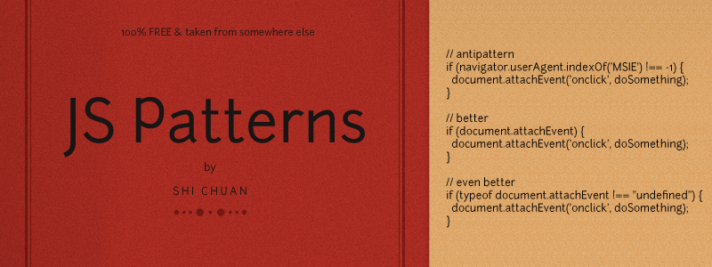

JavaScript Pattern Collection

Function Patterns
API Patterns
- Callback patterns - when you pass function A to function B as a parameter, function A is a callback function
- Configuration objects - keep control of function arguments and makes it easily configurable
- Returning functions - one function returns another function or create another function on-demand
- Currying - used to create new functions dynamically by partially applying a set of arguments
Initialization patterns
Performance patterns
- Memoization - use function properties to avoid repeated computation
- Self-defining functions - self-overwrite with new bodies to do less work from the second invocation and after
jQuery Patterns
Design Patterns
Creational
- Builder - constructs complex objects by separating construction and representation
- Factory method - creates objects without specifying the exact class to create
- Singleton - restricts object creation for a class to only one instance
Structural
- Decorator - dynamically adds/overrides behaviour in an existing method of an object
- Facade - provides a simplified interface to a large body of code
- Proxy - provides a placeholder for another object to control access, reduce cost, and reduce complexity
Behavioral
- Chain of responsibility - delegates commands to a chain of processing objects
- Command - creates objects which encapsulate actions and parameters
- Iterator - implements a specialized language
- Mediator - allows loose coupling between classes by being the only class that has detailed knowledge of their methods
- Observer - is a publish/subscribe pattern which allows a number of observer objects to see an event
- Strategy - allows one of a family of algorithms to be selected on-the-fly at runtime
General Patterns
- single var pattern - use one var statement and declare multiple variables
- globals - problem with globals
- conditionals - pattern and antipattern of using if else
- hoisting - var statements anywhere in a function act as if the variables were declared at the top of the function
- for loops - optimized for loops
- for-in loops - optimized for-in loops